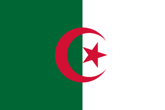
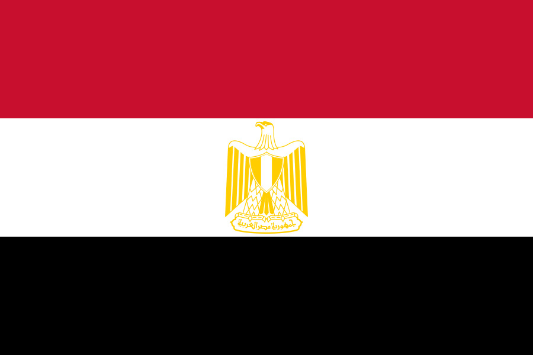
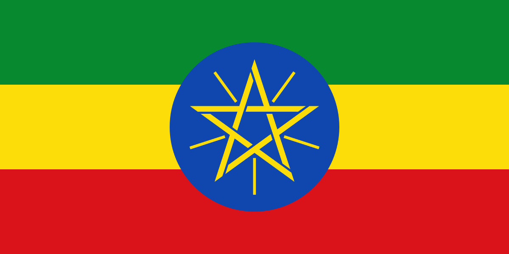
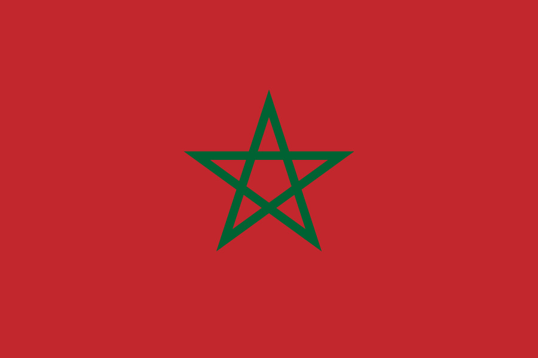
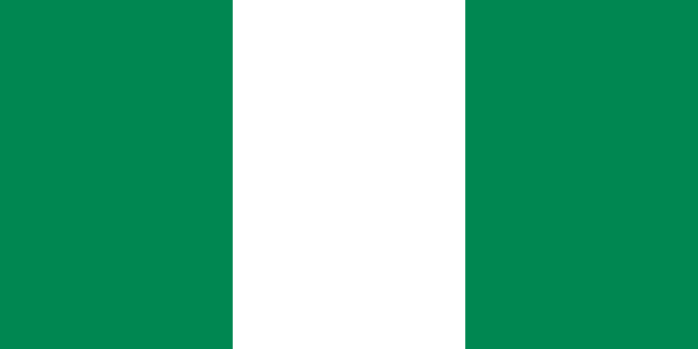

A África é o terceiro maior continente do mundo, com cerca de 30 milhões de km²
(20% da terra firme) e 54 países soberanos reconhecidos.
Considerado o berço da humanidade, possui uma população jovem e multicultural, superando 1,4 bilhão
de habitantes. É marcado por enorme diversidade geográfica, incluindo o Saara, savanas e a bacia do Congo.
Geografia: É atravessada pela Linha do Equador e pelos trópicos, apresentando climas que variam do equatorial ao desértico.
O relevo é predominantemente composto por planaltos, com destaque para o Grande Vale do Rift.
Economia: A economia baseia-se na exportação de recursos naturais (minérios e petróleo), com forte
presença da agropecuária, mas sofre com a exploração externa e infraestrutura limitada.
Países: Argélia, Egito, Líbia, Marrocos, Sudão, Sudão do Sul e Tunísia,
Benim, Burkina Faso, Cabo Verde, Costa do Marfim, Gâmbia, Gana, uiné, Guiné-Bissau, Libéria, Mali, Mauritânia, Níger,
Nigéria, Senegal, Serra Leoa e Togo
Angola, Burundi, Camarões, Chade, Gabão, Guiné Equatorial, República Centro-Africana, República Democrática do Congo, República do Congo, Ruanda e São Tomé e Príncipe